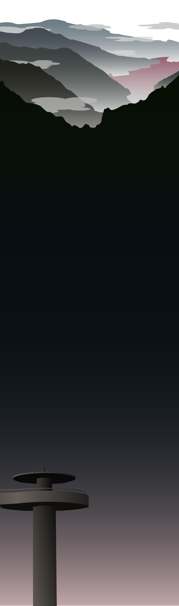

About the park
The Great Smoky Mountains National Park, colloquially known as “The Smokies” is the nation’s most visited national park gathering around 11 million visitors per year. This 522,427 acre national park includes a remnants of the Southern Appalachian Mountains, and spreads across the states of Tennessee and North Carolina.
Its most recognizable word, and commonly atrophied characteristic, “Smoky” derives from the natural fog that is often seen over the range of mountains throughout, and can be seen from a distance. The smoke itself is caused from the surrounding vegetation which exhales organic chemicals that have a high vapor pressure at relatively normal temperatures.
Est. June 15, 1934
North Carolina, Tennessee
83.4985° W
35.5628° N
816 mi²
Destination Hikes
This park also offers some amazing destination hikes, such as; Charlies Bunion, Alum Cave Bluffs, Rainbow Falls, and Chimney Tops. These hikes can provide exquisite views throughout the hike itself, and lead to even more beautiful views at their designated locations, including waterfalls, mountaintop views, and a variety of wildlife.
Wildlife Viewing
The park also offers amazing wildlife viewing ranging from its diversity in wildflowers which includes over 1,500 different kinds of plants, and locations where wild animals can be seen, including black bears, elk, white-tailed deer, and many more.
Scenic Routes
Whether you’re a hiker or prefer to drive, the park also offers scenic driving routes as well, an example of that being the Roaring Fork Motor Nature Trail.
Ober Gatlinburg
This national park is also considered a temperate forest, meaning that throughout the four seasons, the park’s atmosphere will change, and so will it’s activities. One of it’s most commonly known activity hubs that changes in accordance to the seasons is: Ober Gatlinburg, this location offers a variety of activities to do depending on the season. Find yourself at an amazing ski resort throughout the winter months, and alternatively, at an outdoor water park throughout the summer months. However, whatever season it may be, it also offers a variety of indoor activities that are available year round.
Clingmans Dome
Clingmans Dome, also known as the parks highest point offers an amazing 360 degree view of the amazing park scenery, and on a clear day, the view can range to as far as 100 miles offering views of seven surrounding states which include: Tennessee, North Carolina, Kentucky, South Carolina, Virginia, Alabama, and Mississippi.
So if you ever find yourself wanting to experience a national park with a variety to offer and amazing views, take a trip on down to the Great Smoky Mountains!
Click here to visit the official website of
the Great Smoky Mountains
Information from
https://www.nps.gov/grsm/index.htm
https://www.cabinsofthesmokymountains.com/things-to-do/ clingmans-dome/
https://travel.usnews.com/Great_Smoky_Mountains_National_Park_TN/Things_To_Do/
